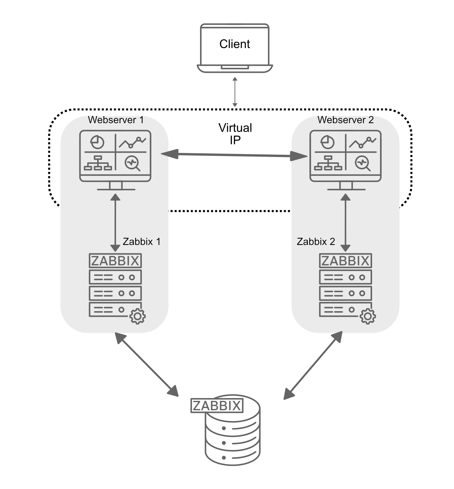
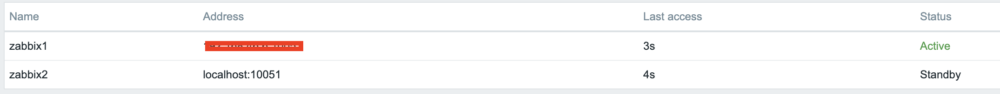
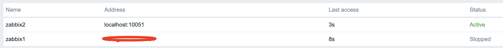

HA-Setup
In diesem Abschnitt konfigurieren wir Zabbix in einer Hochverfügbarkeitskonfiguration (HA). Diese native Funktion, eingeführt in Zabbix 6, ist ein wesentlicher Verbesserungsaspekt, der eine fortlaufende Überwachung sicherstellt, selbst wenn ein Zabbix-Server ausfällt. Mit HA übernimmt ein anderer Server problemlos den Betrieb, wenn ein Zabbix-Server ausgefallen ist.
Für diese Anleitung verwenden wir zwei Zabbix-Servers und eine Datenbank, aber die Konfiguration ermöglicht es auch, weitere zabbix-Servers hinzuzufügen, falls erforderlich.

1.10 HA Setup
Es ist wichtig zu beachten, dass die Zabbix-HA-Konfiguration einfach ist und Redundanz bietet, ohne komplexe Funktionen wie Lastverteilung. Nur ein Knoten wird aktiv sein, alle anderen Knoten werden in Bereitschaft stehen. Alle bereitstehenden Zabbix-Servers im HA-Cluster überwachen den aktiven Knoten durch Herzenbumps mithilfe der gemeinsamen Datenbank. Es erfordert keine zusätzliche Clustering-Software oder sogar Firewall-Ports für den Zabbix-Server selbst. Allerdings werden wir Keepalived zum Bereitstellen einer Virtuellen IP (VIP) für Failover-Zwecke verwenden.
Wie bei unserer grundlegenden Konfiguration dokumentieren wir in dieser HA-Konfiguration die wesentlichen Details für die Server. Unterhalb finden Sie eine Liste der Server und ein Platzhalter, um ihre jeweiligen IP-Adressen hinzuzufügen:
| Server | IP Address |
|---|---|
| Zabbix Server 1 | |
| Zabbix Server 2 | |
| Database | |
| Virtual IP |
Note
Unsere Datenbank (DB) in dieser Konfiguration ist nicht für HA konfiguriert. Da es kein Zabbix-Modul ist, müssen Sie Ihre eigene Lösung für die DB-HA implementieren, z.B. ein HA-SAN oder eine DB-Klusterkonfiguration. Eine DB-Klusterkonfiguration liegt außerhalb des Rahmens dieser Anleitung und ist unabhängig von Zabbix, daher wird sie hier nicht behandelt.
Installieren der Datenbank
Siehe das Kapitel Zabbix Komponenten: Datenbank für detaillierte Anweisungen zur Installation der Datenbank. Dieses Kapitel bietet Schritt-für-Schritt-Anleitungen für die Installation einer PostgreSQL- oder MariaDB-Datenbank auf einem dedizierten Knoten, der Ubuntu, SUSE oder Rocky Linux ausführt. Die gleichen Installationsanweisungen gelten auch für die Konfiguration der Datenbank in dieser Anleitung.
Zabbix-Kluster installieren
Die Einrichtung eines Zabbix-Klusters beinhaltet die Konfiguration mehrerer Zabbix-Servers, um zusammenzuarbeiten und Hochverfügbarkeit zu bieten. Obwohl der Prozess ähnlich ist wie bei der Einrichtung eines einzelnen Zabbix-Servers, sind zusätzliche Konfigurationsanweisungen erforderlich, um HA (Hochverfügbarkeit) zu aktivieren.
Beginnen Sie damit, die Systeme für- und installieren Sie den Zabbix-Server auf allen Systemen indem Sie die Schritte in den Abschnitten Vorbereitung des Servers für Zabbix und Installieren von Zabbix Server des Kapitels Zabbix Komponenten befolgen.
Beachten Sie:
- Sie müssen den Schritt zur Bevölkerung der Datenbank auf allen, außer dem ersten Zabbix-Server überspringen, da die Datenbank zwischen allen Zabbix-Servers geteilt wird.
- Sie müssen den Start des zabbix-server-Dienstes auf allen Servern überspringen, da wir ihn später nach der HA-Konfiguration starten werden.
- Stellen Sie sicher, dass alle Zabbix-Servers in der Lage sind, sich mit dem Datenbankserver zu verbinden.
Zum Beispiel, wenn Sie PostgreSQL verwenden, stellen Sie sicher, dass die
pg_hba.confDatei so konfiguriert ist, dass Verbindungen von allen Zabbix-Servers erlaubt sind. - Alle Zabbix-Servers sollten denselben Datenbanknamen, Benutzernamen und Passwort verwenden, um sich an die Datenbank zu verbinden.
- Alle Zabbix-Servers sollten dieselbe Hauptversion sein.
Wenn alle Zabbix-Servers installiert und konfiguriert wurden, um auf die Datenbank zuzugreifen, können wir mit der HA-Konfiguration fortfahren.
Konfigurieren von Zabbix Server 1
Fügen Sie eine neue Konfigurationsdatei für die HA-Einrichtung auf dem ersten Zabbix-Server hinzu:
Hochverfügbarkeit-Zabbix-Server-Konfiguration hinzufügen
Fügen Sie die folgende Zeile in die Konfigurationsdatei ein, um den HA-Modus zu aktivieren.
Geben Sie die Frontend-Knotenadresse für Failover-Szenarien an:
Warning
Der NodeAddress muss mit der IP oder dem FQDN des Zabbix-Server-Knotens übereinstimmen.
Ohne diesen Parameter kann das Zabbix-Frontend nicht auf den aktiven Knoten verbinden. Das Ergebnis ist, dass das Frontend nicht in der Lage ist,
die Status der Warteschlange und anderer Informationen anzuzeigen.
Konfigurieren von Zabbix Server 2
Wiederholen Sie die Konfigurationsanweisungen für den zweiten Zabbix-Server. Passen Sie HANodeName
und NodeAddress an, falls erforderlich.
Hochverfügbarkeit-Konfiguration von Zabbix Server 2 high-availability.conf
Sie können weitere Server hinzufügen, indem Sie die gleichen Schritte wiederholen und sichergestellt, dass jeder Server eine eindeutige
HANodeName und die richtige NodeAddress hat.
Starten des Zabbix-Servers
Nach der Konfiguration beider Server aktivieren und starten Sie den zabbix-server-Dienst auf jedem:
Überprüfen der Konfiguration
Überprüfen Sie die Protokolldateien auf beiden Servern, um sicherzustellen, dass sie korrekt gestartet wurden und in ihrem jeweiligen HA-Modus arbeiten.
Auf dem ersten Server:
Im Systemprotokoll sollten Sie die folgenden Einträge beobachten, was die Initialisierung des Hochverfügbarkeits-Managers (HA) anzeigt:
HA-Protokolleinträge auf aktiven Knoten
Diese Protokolldaten bestätigen, dass der HA-Manager-Prozess gestartet wurde und die aktive Rolle übernommen hat. Das bedeutet, dass das Zabbix-Instanz jetzt der primäre Knoten im HA-Kluster ist, führt alle Überwachungsoperationen durch. Bei einem Failover-Ereignis übernimmt ein weiterer Bereitschaftsknoten basierend auf der konfigurierten HA-Strategie.
Das Ausführen des gleichen Befehls auf dem zweiten Server (und jedem zusätzlichen Knoten):
HA-Protokolleinträge auf Bereitschaftsknoten
Diese Meldungen bestätigen, dass der HA-Manager-Prozess aufgerufen und erfolgreich im Bereitschaftsmodus gestartet wurde. Dies deutet darauf hin, dass der Knoten funktionsfähig ist, aber nicht als aktiver HA-Instanz tätig ist und wartet auf weitere Zustandsübergänge basierend auf der konfigurierten HA-Strategie.
In diesem Stadium ist Ihr Zabbix-Kluster erfolgreich für Hochverfügbarkeit (HA) konfiguriert. Die Systemprotokolle bestätigen, dass der HA-Manager initialisiert und im Bereitschaftsmodus läuft, was darauf hinweist, dass Failover-Mechanismen vorhanden sind. Diese Konfiguration gewährleistet ununterbrochene Überwachung, selbst bei einem Serverausfall, indem automatische Rollenumwandlungen basierend auf der HA-Konfiguration ermöglicht werden.
Installieren des Frontends
Bevor Sie mit der Installation und Konfiguration des Web-Servers fortfahren, ist es wichtig, irgendeine Art von Clustering-Software oder einen Lastbalancer vor den Zabbix-Frontends zu installieren, um eine gemeinsame Virtuelle IP (VIP) haben zu können.
Note
Es gibt mehrere Optionen für Clustering-Software und Lastbalancer, einschließlich Pacemaker, Corosync, HAProxy, F5 Big-Ip, Citrix NetScaler und verschiedenen Cloud-Lastbalancern. Jede dieser Lösungen bietet eine Reihe von Funktionen und Möglichkeiten über das Bereitstellen einer VIP für Failover-Zwecke hinaus. Aber im Rahmen dieser Anleitung konzentrieren wir uns auf einen minimalistischen Ansatz, um die Hochverfügbarkeit des Zabbix-Frontends mit Keepalived zu erreichen.
Keepalived ist wie ein Helfer, der sicherstellt, dass ein Computer einspringt, wenn ein anderer ausfällt. Es gibt ihnen eine gemeinsame magische IP-Adresse, sodass Benutzer nicht bemerken, wenn ein Server ausgefallen ist. Wenn der Hauptrechner ausfällt, springt die Reserve sofort ein, indem sie die IP übernimmt.
Keepalived ist eine minimale Art von Clustering-Software, die den Einsatz einer (VIP) für Frontend-Dienste ermöglicht und damit einen flüssigen Failover und Dienstkontinuität sicherstellt.
Hochverfügbarkeit auf SUSE Linux Enterprise Server (SLES)
Auf SUSE Linux Enterprise Server (SLES) ist Keepalived nicht im Standardabonnement enthalten, daher unverfügbar in den Standard-Repositories.
Um Keepalived auf SLES in einer unterstützten Weise zu installieren und zu verwenden, benötigen Sie das zusätzliche 'SUSE Linux Enterprise High Availability Extension' Abonnement (SLE HA). Dieses Abonnement bietet Zugriff auf die notwendigen Pakete und Aktualisierungen für Keepalived und andere Hochverfügbarkeitskomponenten. Nachdem Sie das Abonnement erhalten haben, können Sie die entsprechenden Repositories aktivieren und mit der Installation von Keepalived fortfahren, wie in dieser Anleitung beschrieben:
Wo ADDITIONAL_REGCODE das vom Abonnement bereitgestellte Registrierungscode ist.
Konfigurieren von keepalived
Auf allen Servern, die den Zabbix-Frontend hosten, müssen wir Keepalived installieren. Wie bereits erwähnt, kann dies auf separaten Servern erfolgen, um die Server- und Frontend-Rollen zu trennen, aber in dieser Anleitung werden wir Keepalived auf beiden Zabbix-Servers installieren, um die Hochverfügbarkeit von Frontend und Server sicherzustellen.
Installieren von keepalived
Red Hat
SUSE
Ubuntu
Im nächsten Schritt müssen wir die Keepalived-Konfiguration auf allen Servern anpassen. Während die Konfigurationen ähnlich sein werden, erfordern sie für jeden Server leichte Anpassungen. Wir beginnen mit dem Server 1. Um die Keepalived-Konfigurationsdatei zu bearbeiten, verwenden Sie den folgenden Befehl:
Wenn die Datei bereits Inhalte enthält, sollten diese gelöscht und durch die folgenden Zeilen ersetzt werden:
Warning
Ersetzen Sie enp0s1 mit dem Interface-Namen Ihres Geräts und ersetzen Sie den password
durch etwas Sichereres. Für das virtual_ipaddress verwenden Sie eine freie IP aus Ihrem Netzwerk.
Diese wird als unsere VIP verwendet.We können nun die gleiche Modifikation auf unserem zweiten oder jedem nachfolgenden Zabbix-Server durchführen.
Löschen Sie wie zuvor alles im /etc/keepalived/keepalived.conf-Datei und ersetzen Sie es durch folgende Zeilen:
Ebenso wie bei unserem ersten Zabbix-Server ersetzen Sie enp0s1 mit dem Interface-Namen Ihres
Geräts und ersetzen Sie password durch Ihr Passwort. Füllen Sie virtual_ipaddress wie zuvor aus.
Stellen Sie sicher, dass der Firewall die Keepalived-Verkehr auf allen Servern erlaubt. Das VRRP-
Protokoll unterscheidet sich vom Standard-IP-Protokoll und verwendet den Multicast-Adresse
224.0.0.18. Daher müssen wir diesen Verkehr explizit durch die Firewall zulassen.
Führen Sie folgende Befehle auf allen Servern aus:
Erlaube Keepalived-Verkehr durch den Firewall
Red Hat / SUSE
Ubuntu
Dies beendet die Konfiguration von Keepalived. Wir können nun mit der Anpassung des Frontends fortfahren.
Installieren und Konfigurieren des Frontends
Installieren Sie das Zabbix-Frontend auf allen Zabbix-Servern, die Teil des Clusters sind, indem Sie den Schritten im Abschnitt Installing the frontend folgen.
Warning
Benutzer von Ubuntu müssen in der Nginx-Einrichtung den VIP verwenden und zusammen mit der lokalen IP im listen-Direktiv des Konfigurationsdateis angeben.
Note
Vergessen Sie nicht, beide Frontends zu konfigurieren. Dies ist eine neue Einrichtung.
Beachten Sie, dass bei einer bestehenden Einrichtung die Zeilen $ZBX_SERVER
und $ZBX_SERVER_PORT in /etc/zabbix/web/zabbix.conf.php auskommentiert werden müssen. Unser Frontend
wird überprüfen, welcher Knoten aktiv ist, indem es die Tabelle Knoten im Datenbank abruft.
Sie können den aktiven Knoten durch Abfrage der ha_node-Tabelle in der Zabbix-Datenbank bestätigen.
Diese Tabelle enthält Informationen über alle Knoten in dem HA-Cluster, einschließlich deren Status.
Um den Status der Knoten zu überprüfen, können Sie folgenden SQL-Befehl ausführen:
Überprüfung der ha_node-Tabelle in einer PostgreSQL-Datenbank
zabbix=> select * from ha_node;
ha_nodeid | name | address | port | lastaccess | status | ha_sessionid
---------------------------+---------+-----------------+-------+------------+--------+---------------------------
cm8agwr2b0001h6kzzsv19ng6 | zabbix1 | xxx.xxx.xxx.xxx | 10051 | 1742133911 | 0 | cm8apvb0c0000jkkzx1ojuhst
cm8agyv830001ell0m2nq5o6n | zabbix2 | localhost | 10051 | 1742133911 | 3 | cm8ap7b8u0000jil0845p0w51
(2 rows)
In diesem Fall ist der Knoten zabbix2 als aktiver Knoten identifiziert, wie durch seinen Statuswert von 3 angezeigt wird,
der einen aktiven Zustand anzeigt. Mögliche Statuswerte sind:
0– Mehrere Knoten können im Standby-Zustand bleiben.1– Ein zuvor erkannter Knoten wurde heruntergefahren.2– Ein Knoten war zuvor erkannt, aber ohne ordnungsgemäße Herunterfahrt nicht verfügbar geworden.3– Der Knoten ist aktuell aktiv.
Diese Klassifizierung ermöglicht eine effektive Überwachung und Zustandskontrolle im Cluster.
Nachdem das Frontend auf allen Servern installiert wurde, müssen wir den Keepalived-Dienst starten und aktivieren, um sicherzustellen, dass er bei jedem Neustart automatisch gestartet wird und die Verwaltung des VIP beginnt:
Überprüfung der korrekten Funktionsweise
Um zu überprüfen, ob die Einrichtung ordnungsgemäß funktioniert, verwenden Sie den Zabbix-Server
über die Virtuelle IP (VIP). Navigieren Sie zu Reports | System Information im Menü.
Am unteren Ende der Seite sollten Sie eine Liste von Servern sehen, wobei mindestens einer als aktiv markiert ist. Die Anzahl der angezeigten Server hängt davon ab, wie viele in Ihrer HA-Einrichtung konfiguriert sind.

1.11 verify HA
Schalten Sie den aktiven Frontend-Server aus oder neustarten Sie ihn und beobachten Sie, dass der Zabbix-Frontend immer noch erreichbar ist. Bei Neuladen der Seite werden Sie feststellen, dass der andere Frontend-Server als aktive Instanz übernommen hat, was eine fast nahtlose Failover und Hochverfügbarkeit sicherstellt.

1.12 verify HA
Neben der Überwachung des Status von HA-Knoten bietet Zabbix mehrere Runtime-Befehle, die Administratoren ermöglichen, Failover-Einstellungen zu verwalten und inaktive Knoten dynamisch zu entfernen.
Einer solcher Befehl ist:
Dieser Befehl justiert den Failover-Zeitverzug, der definiert, wie lange Zabbix wartet, bevor es einen Standby-Knoten zum aktiven Status hochstufen wird. Der Verzug kann innerhalb eines Bereichs von 10 Sekunden bis 15 Minuten eingestellt werden.
Um einen Knoten zu entfernen, der entweder stopped oder unreachable ist, muss folgender Runtime-Befehl verwendet werden:
Die Ausführung dieses Befehls entfernt den Knoten aus dem HA-Cluster. Bei erfolgreicher Entfernung bestätigt die Ausgabe die Aktion:
Entfernen eines Knotens
Wenn der entfernte Knoten wieder verfügbar wird, kann er automatisch hinzugefügt werden, wenn er sich dem Cluster neu verbindet. Diese Runtime-Befehle bieten Flexibilität für die Verwaltung von Hochverfügbarkeit in Zabbix ohne vollständiges Neustarten des zabbix_server-Prozesses.
Schlussfolgerung
In diesem Kapitel haben wir erfolgreich eine hochverfügbare (HA) Zabbix-Umgebung eingerichtet, indem wir sowohl den Zabbix-Server als auch das Frontend für Redundanz konfiguriert haben. Wir haben zunächst HA für den Zabbix-Server eingerichtet, um sicherzustellen, dass die Überwachungsdienste auch bei einem Ausfall verfügbar bleiben. Anschließend haben wir uns auf das Frontend konzentriert, indem wir einen Virtual IP (VIP) mit Keepalived implementiert haben, um eine nahtlose Failover und ständige Erreichbarkeit zu gewährleisten.
Darüber hinaus haben wir die Firewall so konfiguriert, dass sie den Keepalived-Verkehr zulässt und sichergestellt, dass der Dienst nach einem Neustart automatisch gestartet wird. Mit dieser Einrichtung kann das Zabbix-Frontend dynamisch zwischen Servern wechseln, was die Ausfallzeiten minimiert und die Zuverlässigkeit verbessert.
Während eine Datenbank-HA ein wichtiger Überlegungsaspekt ist, fällt sie außerhalb des Rahmens dieser Einrichtung. Allerdings bietet diese Grundlage einen robusten Ausgangspunkt für das Erstellen einer robusten Überwachungsinfrastruktur, die nach Bedarf weiter verbessert werden kann.
Fragen
- Was ist Zabbix High Availability (HA), und warum ist es wichtig?
- Wie bestimmt Zabbix den aktiven Knoten in einem HA-Setup?
- Können mehrere Zabbix-Knoten gleichzeitig aktiv sein in einem HA-Cluster? Warum oder warum nicht?
- Welche Konfigurationsdatei(en) sind erforderlich, um HA in Zabbix zu aktivieren?